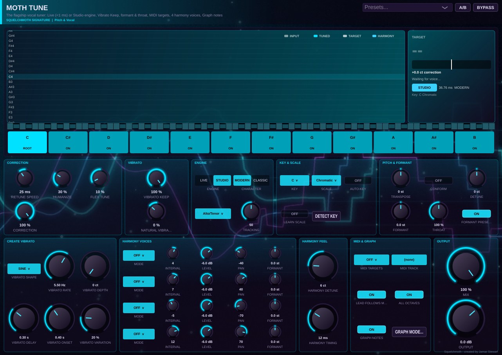
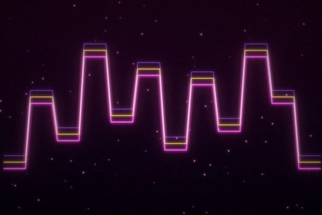

Pitch & Vocal
Moth Tune
The flagship vocal tuner: Live (<1 ms) or Studio engine, Vibrato Keep, formant & throat, MIDI targets, 4 harmony voices, Graph notes
Five packs that drop straight into Squelchmoth — or into the free Demo. Buy, paste the key, and the plug-ins unlock where they already sit in your sessions.
The full program and all five packs for $349.99 — $215 less than buying them one by one.
The vocal chain that finishes records: a tuner with a Live engine under 1 ms and a Studio engine with Graph-mode note editing, a creative tuning rack that mutates, duets, vocodes and talkboxes, and instant automatic double tracking.
Works in every edition, including the free Demo · key by email · perpetual licence

The flagship vocal tuner: Live (<1 ms) or Studio engine, Vibrato Keep, formant & throat, MIDI targets, 4 harmony voices, Graph notes

Creative tuning: editable Motion patterns plus a six-slot X/Y effects rack — Mutate, Duet, Vocode, Talkbox, Octaver, Stutter and more

Automatic double tracking — instant vocal and guitar doubles
The Apex series — dynamics, true-peak limiter with a full loudness meter, three-band maximiser, up to six-band multiband and pitch-tracked sub — plus a passive program EQ and an optical leveller with a real VU.
Works in every edition, including the free Demo · key by email · perpetual licence


Passive program EQ: the boost-and-cut low end, bandwidth high boost, high attenuation, plus a peak-dip-peak mid section and tube

Compressor, expander, gate, ducker and upward compressor in one: lookahead, negative ratios, Smart detection, key filter

True-peak limiter with lookahead, Character and a full BS.1770-4 loudness meter with one-click loudness targets

Three-band maximiser: per-band threshold, knee, attack and release with the envelope view, lookahead ceiling

Up to six bands, minimum or linear phase, flip, solo, auto gain and a live spectrum with draggable crossovers

Pitch-tracked sub-octave and fifth bands from any source range or MIDI, six drive types, filters and mix

Optical leveling amp: program-dependent two-stage release, compress or limit, HF emphasis, tube stage and a real VU
Six-operator FM, sequenced acid FM, a vintage polysynth and its wavetable sibling, a physical string model, electric and acid basses, a keyed multi-zone sampler with SFZ/SF2 import, a SoundFont player, and Pollen with 11 preset packs.
Works in every edition, including the free Demo · key by email · perpetual licence


A physical string model: two coupled strings per voice, pluck / hammer / bow, material pad, 8 bodies, sympathetic strings, vibrato, ethereal chorus + reverb, strum

Six-operator FM / RM hybrid: per-operator wave, ratio, level, feedback and envelope, 8 algorithms, a filter after the operators, 2 LFOs, mod matrix, unison, FX

Six-operator FM with a 16-step pitch / gate / accent / slide sequencer, ladder filter, drive and delay — acid FM, sequenced basses and arps

Vintage polysynth: two drifting oscillators, self-oscillating ladder, ensemble, 8-voice vintage mode, three eras

The vintage synth re-imagined: morphing wavetables plus analogue oscillators, dual filters, 32 voices, mod matrix, drift, FX

Acid bass: saw / square, diode-style ladder, accent and slide, drive, and a 16-step sequencer with slide and accent per step

Electric bass model: plucked string, pick and pickup position, neck / bridge blend, amp, slap, palm mute, fret noise, round-robin picks

The keyed multi-zone sampler: key and velocity zones, round-robin groups, loops with crossfade, ADSR, filter, drop a folder to auto-map, SFZ and SF2 import

SoundFont (SF2) and SFZ bank player: browse the bank's presets, loops, envelopes and velocity layers come through

The preset-pack instrument: 11 packs (Keys, Pads, Plucks, Bass, Brass, Strings, Choir, Bells, Textures, Trap Melodies, Drill Melodies) on the wavetable + analogue engine, four named macros per sound, pack browser with covers
A 16-sound drum synth, an acoustic-leaning live drum synth, a physically-modelled drum per instance, a kick synth with drawable envelopes, two loop slicers — plus ten more sound kits and 51 genre loops.
Works in every edition, including the free Demo · key by email · perpetual licence


16-sound drum synth: membrane, metal, noise, wood and tom models plus the classic two-oscillator engine per sound, choke groups, master tone and drive

The acoustic-leaning drum synth: 12 kit pieces with pitch, decay, tone, snap and room per piece — play it live from pads

One physically-modelled drum per instance, keytracked across the keyboard — membrane, metal, wood or noise, with pitch envelope and drive

Kick drum synth with drawable pitch, amp and distortion envelopes (four breakpoints each), click, sub, tone, drive, and a built-in 16-step pattern

Two-deck slicer: transient or grid slicing, slices on keys (A from C1, B from C4), per-slice pitch / reverse / level / filter / decay, stretch to tempo, dump to piano roll, slice to rack channels, A/B crossfade

The quick slicer: drop a loop, pick the slice resolution, play the slices from C1, dump to the piano roll
A time and volume slicer with 72 factory slots, an eight-stage filter with its own sequencer, oil-can and bucket-brigade delays, a ring modulator, a twelve-stage phaser and a transistor-ladder filter.
Works in every edition, including the free Demo · key by email · perpetual licence


Four- or two-pole transistor-ladder low-pass with envelope follower, resonance and drive

Electrostatic oil-can echo: wobbling delay line, sustain, tone, drive — echo or doubler

Analog bucket-brigade delay: darkening repeats, compander drive, filtered feedback and chorus-style modulation

Ring modulator with sine or square LFO, drive and mix — bells, robots and tremolo

Time and volume slicer: 32 steps over two bars, 36 factory time slots (half-time, stutter, reverse, tape stop, scratch) and 36 volume slots (gates, pumps, trance gates), MIDI picks the slot

Eight filter stages in series, parallel or 4+4, each with its own type, resonance, LFO, envelope follower and share of the 16-step sequencer

Four- to twelve-stage phaser with resonance and stereo spread